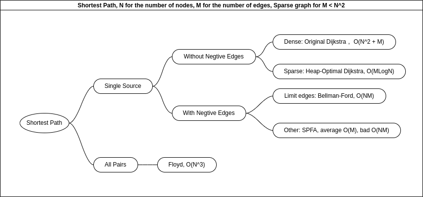

Algorithm Pattern¶
Basic Algorithm¶
Sort¶
Quick Sort¶
1 2 3 4 5 6 7 8 9 10 11 12 | |
Merge Sort¶
1 2 3 4 5 6 7 8 9 10 11 12 13 14 15 | |
Serach¶
Binary Search¶
1 2 3 4 5 6 7 8 9 10 11 12 13 14 15 16 17 18 19 20 21 22 23 24 25 26 27 28 29 30 31 32 33 34 35 36 37 38 39 40 41 42 43 44 45 46 | |
Prefix¶
Prefix Sum¶
1 | |
Prefix Sum 2D¶
1 2 | |
Prefix Diff¶
1 2 3 4 5 6 7 | |
Prefix Diff 2D¶
1 2 3 4 5 6 7 8 9 10 | |
Bit Operator¶
K bit¶
1 | |
Lowbit¶
1 | |
Two Pointers¶
1 2 3 4 5 6 7 8 9 10 11 12 13 14 15 16 17 18 | |
Discrete¶
1 2 3 4 5 6 7 8 9 10 11 12 13 14 15 16 17 | |
Merge Range¶
1 2 3 4 5 6 7 8 9 10 11 12 13 14 15 | |
Data Structure¶
Linked List¶
1 2 3 4 5 6 7 8 9 10 11 12 13 14 15 16 17 18 19 20 21 22 23 24 25 | |
Double Linked List¶
1 2 3 4 5 6 7 8 9 10 11 12 13 14 15 16 17 18 | |
Stack¶
1 2 3 4 5 6 7 | |
Queue¶
1 2 3 4 5 6 7 | |
Monotonous stack¶
1 2 3 4 5 6 7 | |
Monotonous queue¶
1 2 3 4 5 6 7 8 9 10 11 12 13 | |
KMP¶
1 2 3 4 5 6 7 8 9 10 11 12 13 14 15 16 | |
Trie¶
1 2 3 4 5 6 7 8 9 10 11 12 13 14 15 16 17 18 19 20 21 22 23 | |
Union¶
1 2 3 4 5 6 7 8 9 10 11 12 13 14 15 16 17 18 19 20 21 22 23 24 25 26 27 28 29 30 31 | |
Heap¶
1 2 3 4 5 6 7 8 9 10 11 12 13 14 15 16 17 18 19 20 21 22 23 24 25 26 27 28 29 30 31 32 33 34 35 36 37 | |
Hash table¶
1 2 3 4 5 6 7 8 9 10 11 12 13 14 15 16 17 18 19 20 21 22 23 24 25 26 27 28 29 30 31 32 33 34 35 36 | |
1 2 3 4 5 6 7 8 9 10 11 12 13 14 15 | |
Graph¶
Storage of Graph¶
1 2 3 4 5 6 7 8 9 10 11 12 13 14 | |
DFS of graph¶
1 2 3 4 5 6 7 | |
BFS of graph¶
1 2 3 4 5 6 7 8 9 10 11 12 13 | |
Toposort¶
1 2 3 4 5 6 7 8 9 10 11 12 13 | |
Shortest Path(SP)¶

Original Dijkstra¶
1 2 3 4 5 6 7 8 9 10 11 12 13 14 15 16 17 18 19 20 21 22 23 | |
Heap-optimal Dijkstra¶
1 2 3 4 5 6 7 8 9 10 11 12 13 14 15 16 17 18 19 20 21 22 23 24 25 26 27 28 29 30 31 32 33 34 35 36 | |
Bellman-Ford¶
1 2 3 4 5 6 7 8 9 10 11 12 13 14 15 16 17 18 | |
spfa¶
1 2 3 4 5 6 7 8 9 10 11 12 13 14 15 16 17 18 19 20 21 22 23 24 25 26 27 28 29 30 31 32 33 34 35 36 | |
1 2 3 4 5 6 7 8 9 10 11 12 13 14 15 16 17 18 19 20 21 22 23 24 25 26 27 28 29 30 31 32 33 34 35 36 37 38 39 | |
Floyd¶
1 2 3 4 5 6 7 8 9 10 11 12 13 14 15 | |
Minimum Spanning Tree¶
Prim for dense graph, Kruskal for sparse graph.
Prim¶
1 2 3 4 5 6 7 8 9 10 11 12 13 14 15 16 17 18 19 20 | |
Kruskal¶
1 2 3 4 5 6 7 8 9 10 11 12 13 14 15 16 17 18 19 20 21 22 23 24 25 26 27 | |
Bipartite Graph¶
Coloring (check bipartite graph)¶
1 2 3 4 5 6 7 8 9 10 11 12 13 14 15 | |
Maximum Bipartite Matching(MBM), Hungarian¶
1 2 3 4 5 6 7 8 9 10 11 12 13 14 15 16 17 18 19 20 21 22 23 | |
Strongly Connnected Component¶
Tarjan¶
1 2 3 4 5 6 7 8 9 10 11 12 13 14 15 16 17 18 19 20 21 22 23 24 25 26 27 | |
Dynamic Programing(DP)¶
Knapsack Problem¶
Linear Dp¶
Grid problems¶
- 1
- 2
- 3
- Longest Increasing Subsequence(LIS)
- Longest Increasing Subsequence(optimal)
- Longest Common Subsequence(LCS)
- Edit Distance